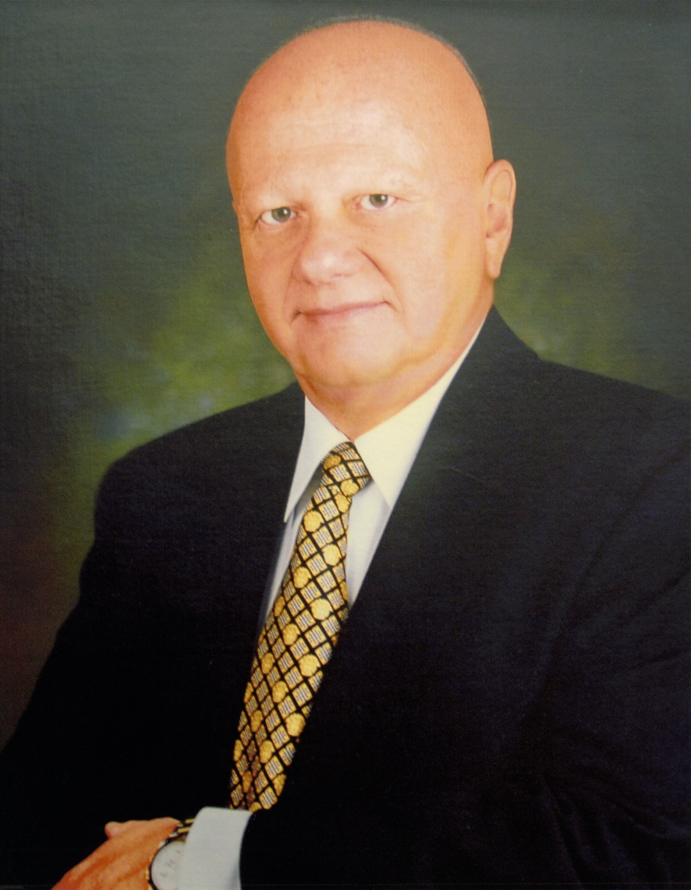

Who We Are
Optional single sentence introducing the people behind the Foundation.
Our Leadership
-
Jacqueline Bernstein
President
-
Wendy Goldman
Vice President
-
Richard M. Kremen
Trustee
-
Thomas Lindley
Trustee
Marvin H. Weiner, 1939 – 2022

A pioneering entrepreneur, community leader, and philanthropist, Marvin Weiner touched the lives of many for decades until his passing in September 2022.
Born in Baltimore, Maryland in 1939, Marvin began working as a teenager in his family’s meat import and repacking business. From the start, he displayed the tireless work ethic and innovative spirit that were to mark his long career. He attended the University of Maryland where not only did he earn his degree in business, but also served as the music director of the WMUC radio station and as a late-night disc jockey. He often spoke passionately about this musical experience — and about his trademark sign-off at midnight:
“Here’s hoping that each and every moment as it passes brings only the best for you and yours. Have a good night.”
At a relatively young age following his father’s premature passing, Marvin took over the leadership of the business while supporting the needs of his mother, sister, and growing family.
In the 1970s, after losing faith in the global meat trading industry, Marvin made the first of several critical decisions to transform the family business to focus more on large-scale storage and transport of a wide range of perishable refrigerated and frozen products. He created a company called Mount Airy Cold Storage and built large-volume cold warehouses in Maryland and Pennsylvania. Interacting with numerous companies that dealt with shipping frozen foods around the country, Marvin recognized that the future of this industry lay in shifting the movement of these products from trucks to railway cars. After concluding that there needed to be a better solution for cold transport by train, he boldly embarked upon a quest to develop a highly specialized rail business. Working with engineers and experimenting with different possible designs, Marvin and his team of industry experts invented a model for a cryogenically refrigerated railcar.
In the 1980s, Marvin created a company called Cryo-Trans, which developed a logistics system for operating these refrigerated railway cars. Marvin was particularly proud to give his customers the opportunity to personalize these cars with names of their own choosing. Many were named after a favorite city, lake, or river, but there was often light-heartedness in the naming such as the “Whoville” train, or the more thoughtful name “Parkland” with the Stoneman Douglas HS emblem painted on the door. Cryo-Trans grew from Marvin’s dream into the nation’s largest privately owned lessor of more than 2,200 mechanically refrigerated and insulated railcars with more than 40,000 annual rail shipments.
Despite working long hours building up his refrigerated railway empire, Marvin remained devoted to family, raised four children, and played an active role in his synagogue and community. He believed in the importance of sharing his wealth and success with those in need. Marvin became well-known as someone who would be receptive to assisting a stranger facing a personal crisis, an employee who required financial help, or a friend of a friend dealing with unexpected medical bills. In the 1990s, Marvin Weiner made his first foray into establishing a formal charitable foundation which he used to provide funding to a wide variety of worthy causes.
As part of his estate, Marvin ensured his legacy as a philanthropist by creating — and endowing for many years to come — the Marvin H. Weiner Foundation, a 501(c)(3) organization. His beloved partner Jacqueline Bernstein and his daughter Wendy Goldman, along with two of his long-time trusted friends who serve as trustees, have now assumed responsibility for managing the charitable foundation and guiding its ongoing charitable priorities.
Marvin Weiner will always be remembered as a person willing to give. When asked why he did it, his characteristic response was: “If you are fortunate enough to have success in life, you have an obligation to share it.”